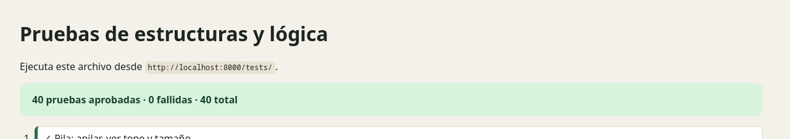
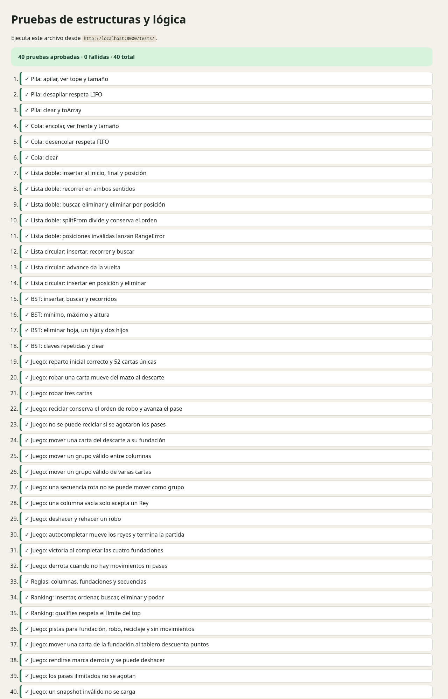
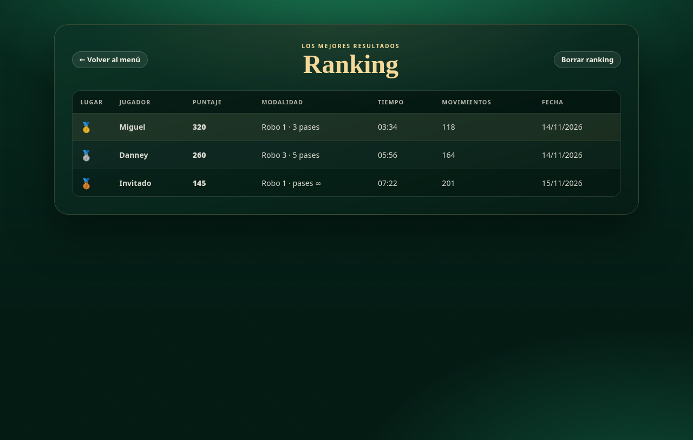

Proyecto final · Estructuras de Datos
Evidencia de pruebas
Klondike — Solitario en JavaScript
Resumen de la ejecución
La suite se ejecuta en el navegador desde http://localhost:8000/tests/. El runner es
propio, no usa dependencias externas y muestra el resultado de cada prueba en orden. La última
ejecución completa terminó sin fallos.

Cómo reproducir la evidencia
- Abrir una terminal en la raíz del proyecto.
- Ejecutar
python3 -m http.server 8000. - Abrir
http://localhost:8000/tests/en Firefox, Chrome o Edge. - Verificar el resumen verde y desplazarse para revisar las 40 pruebas.
Listado completo de pruebas
La tabla reproduce el nombre exacto de cada prueba y su resultado. Las primeras 18 pruebas cubren las cinco estructuras; las demás cubren el motor del juego, las reglas y el ranking.
| # | Bloque | Prueba | Resultado |
|---|---|---|---|
| 1 | Pila | apilar, ver tope y tamaño | ✓ |
| 2 | Pila | desapilar respeta LIFO | ✓ |
| 3 | Pila | clear y toArray | ✓ |
| 4 | Cola | encolar, ver frente y tamaño | ✓ |
| 5 | Cola | desencolar respeta FIFO | ✓ |
| 6 | Cola | clear | ✓ |
| 7 | Lista doble | insertar al inicio, final y posición | ✓ |
| 8 | Lista doble | recorrer en ambos sentidos | ✓ |
| 9 | Lista doble | buscar, eliminar y eliminar por posición | ✓ |
| 10 | Lista doble | splitFrom divide y conserva el orden | ✓ |
| 11 | Lista doble | posiciones inválidas lanzan RangeError | ✓ |
| 12 | Lista circular | insertar, recorrer y buscar | ✓ |
| 13 | Lista circular | advance da la vuelta | ✓ |
| 14 | Lista circular | insertar en posición y eliminar | ✓ |
| 15 | BST | insertar, buscar y recorridos | ✓ |
| 16 | BST | mínimo, máximo y altura | ✓ |
| 17 | BST | eliminar hoja, un hijo y dos hijos | ✓ |
| 18 | BST | claves repetidas y clear | ✓ |
| 19 | Juego | reparto inicial correcto y 52 cartas únicas | ✓ |
| 20 | Juego | robar una carta mueve del mazo al descarte | ✓ |
| 21 | Juego | robar tres cartas | ✓ |
| 22 | Juego | reciclar conserva el orden de robo y avanza el pase | ✓ |
| 23 | Juego | no se puede reciclar si se agotaron los pases | ✓ |
| 24 | Juego | mover una carta del descarte a su fundación | ✓ |
| 25 | Juego | mover un grupo válido entre columnas | ✓ |
| 26 | Juego | mover un grupo válido de varias cartas | ✓ |
| 27 | Juego | una secuencia rota no se puede mover como grupo | ✓ |
| 28 | Juego | una columna vacía solo acepta un Rey | ✓ |
| 29 | Juego | deshacer y rehacer un robo | ✓ |
| 30 | Juego | autocompletar mueve los reyes y termina la partida | ✓ |
| 31 | Juego | victoria al completar las cuatro fundaciones | ✓ |
| 32 | Juego | derrota cuando no hay movimientos ni pases | ✓ |
| 33 | Reglas | columnas, fundaciones y secuencias | ✓ |
| 34 | Ranking | insertar, ordenar, buscar, eliminar y podar | ✓ |
| 35 | Ranking | qualifies respeta el límite del top | ✓ |
| 36 | Juego | pistas para fundación, robo, reciclaje y sin movimientos | ✓ |
| 37 | Juego | mover una carta de la fundación al tablero descuenta puntos | ✓ |
| 38 | Juego | rendirse marca derrota y se puede deshacer | ✓ |
| 39 | Juego | los pases ilimitados no se agotan | ✓ |
| 40 | Juego | un snapshot inválido no se carga | ✓ |
Captura completa del runner

Validación manual de la interfaz
Además de la suite automatizada, se recorrió el juego en Firefox con una ventana de 1280 × 900 px y una vista móvil de 500 × 900 px. La siguiente tabla resume los escenarios comprobados.
| Escenario | Resultado esperado | Estado |
|---|---|---|
| Robo de 1 y de 3 cartas | El descarte recibe la cantidad correcta y el contador de movimientos aumenta. | ✓ |
| Selección de carta | Borde dorado y destinos válidos resaltados. | ✓ |
| Arrastrar y soltar | El grupo se mueve solo a destinos válidos; los inválidos no aceptan el drop. | ✓ |
| Doble clic a fundación | La carta sube si es la siguiente del palo. | ✓ |
| Pistas | Resalta carta y destino; avisa cuando no hay movimientos. | ✓ |
| Deshacer y rehacer | El estado, el puntaje y los contadores vuelven al punto anterior. | ✓ |
| Rendición | Marca derrota, muestra el modal y permite deshacer al cerrarlo. | ✓ |
| Ajustes | Se guardan y se aplican a la siguiente partida. | ✓ |
| Ranking | Guarda, ordena, muestra y borra con confirmación. | ✓ |
| Inspector | Refleja el estado real de las estructuras. | ✓ |
| Teclado | D, U, Y, P, I, Esc y Enter funcionan. | ✓ |
| Móvil | Sin desbordamiento horizontal; el tablero se desplaza dentro de su contenedor. | ✓ |
| Consola | Sin errores ni promesas rechazadas durante los recorridos. | ✓ |
Capturas de la interfaz


Archivos de evidencia
docs/img/10-pruebas.png: captura completa de las 40 pruebas.docs/img/10-pruebas-resumen.png: resumen 40/40.docs/img/01-menu.pnga09-movil.png: capturas de la interfaz.tests/structures.test.jsytests/game.test.js: código de las pruebas.